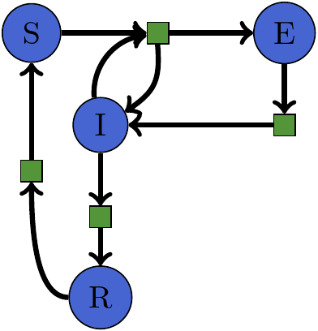

Basic Usage
We need to include our dependencies. Petri is the only requirement to build the models. OrdinaryDiffEq is required for simulating the network with and ordinary differential equation. Plots can be used to plot the solutions generated by OrdinaryDiffEq. LabelledArrays can be used to make things more readable, but is not necessary. Lastly, Catlab is required for visualizing the models as graphviz diagrams.
using Petri
using LabelledArrays
using OrdinaryDiffEq
using Plots
using Catlab.Graphics.Graphiz
import Catlab.Graphics.Graphviz: GraphThe SIR model represents the epidemiological dynamics of an infectious disease that causes immunity in its victims. There are three states: Suceptible ,Infected, Recovered. These states interact through two transitions. Infection has the form S+I -> 2I where a susceptible person meets an infected person and results in two infected people. The second transition is recovery I -> R where an infected person recovers spontaneously.
# define the structure of the model
sir = Petri.Model([:S,:I,:R],LVector(
inf=(LVector(S=1,I=1), LVector(I=2)),
rec=(LVector(I=1), LVector(R=1))))
# define the initial conditions
u0 = LVector(S=100.0, I=1, R=0)
# define the parameters of the model, each rate corresponds to a transition
p = LVector(inf=0.05, rec=0.35)
# evaluate the expression to create a runnable function
f = vectorfields(sir)
# this is regular OrdinaryDiffEq problem setup
prob = ODEProblem(f,u0,(0.0,365.0),p)
sol = OrdinaryDiffEq.solve(prob,Tsit5())
# generate a graphviz visualization of the model
graph = Graph(sir)
# visualize the solution
plt = plot(sol)
Petri Nets are a simple language for describing reaction networks, you can make increasingly complex diseases. For example the SEIR model has an Exposed phase where people have the disease, but are not infectious yet.

seir = Petri.Model([:S,:E,:I,:R],LVector(
exp=(LVector(S=1,I=1), LVector(I=1,E=1)),
inf=(LVector(E=1), LVector(I=1)),
rec=(LVector(I=1), LVector(R=1))))
u0 = LVector(S=100.0, E=1, I=0, R=0)
p = (exp=0.35, inf=0.05, rec=0.05)
f = vectorfields(seir)
prob = ODEProblem(f,u0,(0.0,365.0),p)
sol = OrdinaryDiffEq.solve(prob,Tsit5())
plt = plot(sol)
The previous models have transitory behavior, the infection spreads and then terminates as you end up with no infected people in the population. The following SEIRS model has a non-trivial steady state, because recovered people lose their immunity and become susceptible again.

seirs = Petri.Model([:S,:E,:I,:R],LVector(
exp=(LVector(S=1,I=1), LVector(I=1,E=1)),
inf=(LVector(E=1), LVector(I=1)),
rec=(LVector(I=1), LVector(R=1)),
deg=(LVector(R=1), LVector(S=1))))
u0 = LVector(S=100.0, E=1, I=0, R=0)
p = LVector(exp=0.35, inf=0.05, rec=0.07, deg=0.3)
f = vectorfields(seirs)
prob = ODEProblem(f,u0,(0.0,365.0),p)
sol = OrdinaryDiffEq.solve(prob,Tsit5())
plt = plot(sol)